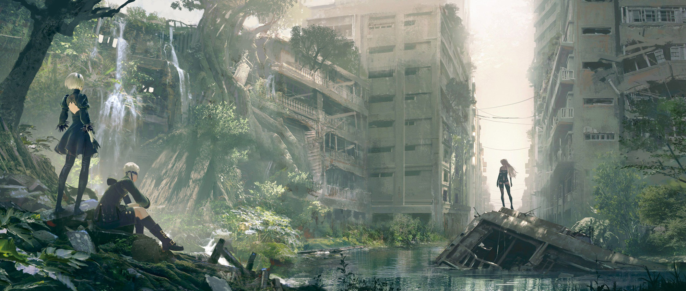
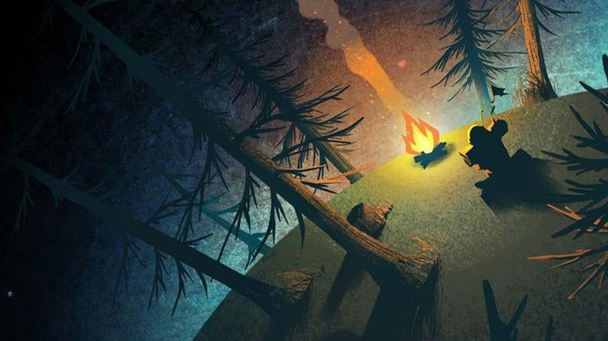
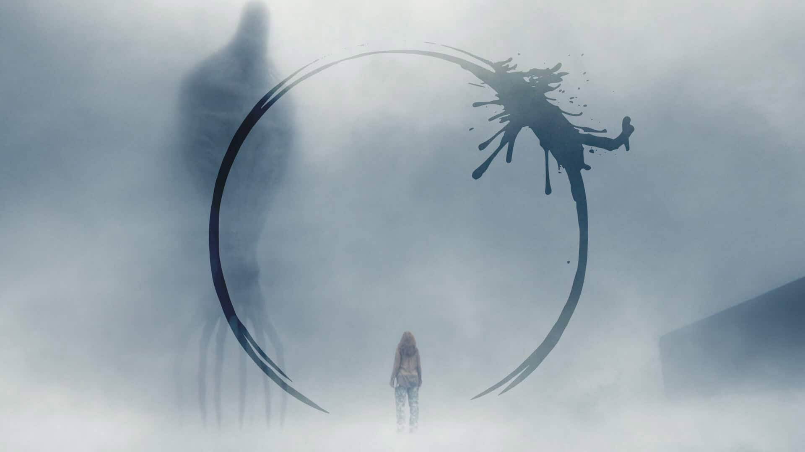
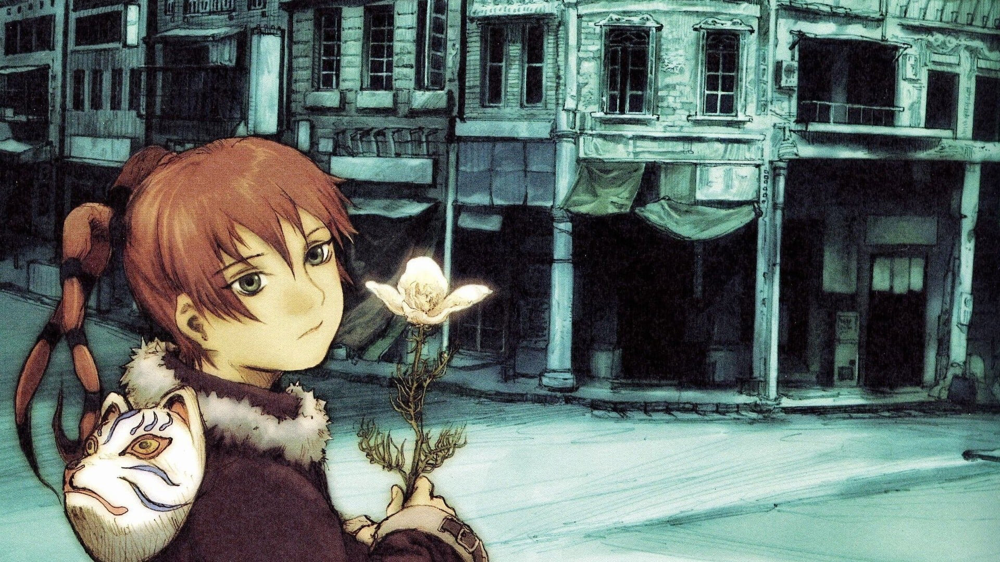
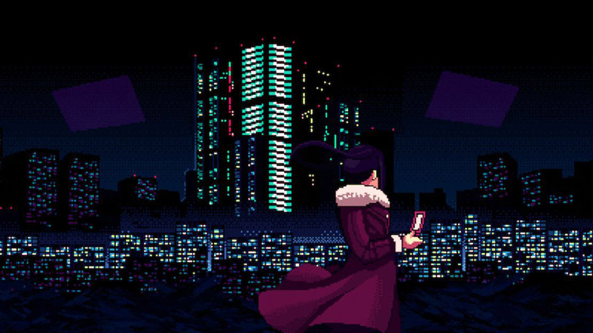

Nier: Automata
- Director:
- Yoko Taro
- Released:
Plot
The year is 11945: humanity has fled to the moon after an alien attack and has created androids to fight a proxy war to reclaim earth. Aliens retaliate with their own machine life-form army, but neither win. The two fight for so long that human cities become overgrown ruins.
Analysis
The game is played from the perspective of androids, and this is often used to explain game mechanics. Androids have access to a network in which their data can be stored and uploaded into new bodies. Network connection also explains why the machines life-forms have access to knowledge that would otherwise be inaccessible to an individual with limited experience.
However, while technology is at the heart of this story, it's used as a lens to examine the human experience. This future takes a bleak delve into existentialism, where robots contemplate the meaning of life when it becomes clear that existence is inherently meaningless.
Outer Wilds
- Designers:
- Alex Beachum, Loan Verneau
- Released:
Plot
In my opinion, I think this game is best experienced without knowing anything about it beforehand so if you haven't already, I encourage you to pick it up or watch someone else play it. That being said though, I will include a summary here anyways. Our playable character is an alien from a different solar system who travels in a tiny, rickety spaceship. We are trapped in a 22-minute loop, at the end of which the solar system's star explodes. The game ends when the player breaks the cycle in some fashion. There are multiple endings to the story which dependent on how the player ends the cycle.
Analysis
Outer Wilds is a game about exploration, making observations about the worlds you find yourself in, and piecing together the story of another alien species called the Nomai who had once inhabited the solar system. The game presents an intricate mystery to the player, one which ties the Nomai disappearance, the strange physics of the worlds you explore, and the time loop.
In many ways, this game is also about coming to terms with and facing death. For the player character, death is innevitable and its symbol is the supernova. No matter what the player does, the supernova can't be stoped and even if the player manages to escape it, they find themselves unable to live without the solar system. In fact, it's not just the player character that is dying, as we uncover the mystery we discover that every solar system is going supernova. The player character just happens to be living at the end of the universe's lifespan. Control of the plot's apocalyptic outcome is wrested from the player, where in many games we are given that control. I think this is one of the many ways the game encourages us to think about death.
Arrival
- Director:
- Denis Villeneuve
- Released:
Plot
To put it simply, Arrival’s plot structure is difficult to summarize because the story is non-linear. Events which happened in the past are also bound to happen in the future, and all of this because the protagonist, Louise Banks, perceives time in a circular fashion. The movie begins with two inciting incidents: Louise’s daughter dies at a young age, and aliens (called heptapods) land in several locations around the globe. Louise is recruited by the U.S. military to decipher the language of heptapods, and in doing so, she learns to think how they do, which is in circular time. Louise learns that the whole purpose of their visit to earth was to gift humanity with this kind of thinking so that they may help heptapods in the future.
Analysis
It’s not possible to think about this film without also thinking about how it’s plot is delivered. Since Louise perceives time differently, the audience also is shown scenes sometimes in a non-linear order. Interestingly, the audience is not told that Louise is in circular time, and we see the events appearing as if they were in linear order. This means the audience makes an assumption about Louise, that whenever we see her seeing into the future, we assume she is remembering the past. That past being the moments she spent with her daughter before she dies, in the future.
I find this method of story-telling compelling, and makes re-watching the film all the more interesting. The story is at first framed as one about grief, and after we are told Louise is seeing the future/past, it becomes a story about making decisions that have devastating outcomes but are worth making anyways. Even knowing that her daughter dies and that she’ll separate from her partner, Louise decides to marry and have a daughter anyways.
Texhnolyze
- Director:
- Hiroshi Hamasaki
- Released:
Plot
Set in an utterly melancholic and dystopic future, Texhnolyze features an ensemble cast living their last days before humanity’s inevitable end. It is a future where advanced robotics and prosthetics have been combined into what is dubbed Texhnolyzation. The last of humanity has been divided into three classes: the lowest class toils away in an underground city, Lux, the middle class living in an impenetrable fortress next to Lux, and the upper class which literally lives above the others on the surface. The story revolves around many characters, though much of it is seen from the perspectives of Ichise, an ex-prize fighter, Ran, an android prophet who is the voice and mind of Lux, and Oonishi an executive and mob-boss of Lux.
Analysis
There is a lot to be said about how Texhnolyze addresses the many ways in which oppressors use technology to strip the oppressed of their autonomy. The first, and overt, example of this is with the very first scenes with Ichise, the lowest of the low. He lays dying after having his limbs cut off by his master, and by a stroke of chance, is taken in by a middle-class doctor for treatment.
One would think that this would be an opportunity where the series turns its head, and portrays class being ignored by those in power to help the destitute, however this is not the case. Ichise’s wounds are treated, however, the doctor fits him with texhnolyzed limbs against his will. She does this despite having first asked for his consent, and expressly not getting it. While giving him the limbs, the scene is shot in such a way to liken this process to assault, really bringing into sharp focus that he did not want this. All this, and the doctor gave him the limbs to further her own purposes: she only wishes to prove the validity of her research so that she may ascend her own class. This is only the first of many instances where technology is used to exploit rather than help.
Va-11 Hall-A
- Developers:
- Sukeban Games, Wolfgame (Vita)
- Released:
Plot
Androids and humans live together in Glitch City where, in the year 207X, nanomachines saturate the air. Va-11 Hall-A is a cyberpunk game featuring the protagonist Jill, a bartender barely making ends meet. The game is mainly visual novel, wherein the player does not choose what Jill says, but what drinks she serves. These decisions change the trajectory of the conversations Jill has with her customers.
Analysis
Like much of cyberpunk media, Va-11 Hall-A captures the dystopic, and very modern, feeling that corporations have huge power over our lives. Rebellion in Va-11 Hall-A is more subtle: it’s getting by in a world made hostile by the ultra-rich, finding happiness despite everything, and building community. None of the characters in the game have much political power and make themselves figures to be later remembered in history.
In line with this more subtle form of rebellion, the personal takes precedence over world events in the plot. This results in giving the game’s story a more grounded feeling, despite its setting. In this more relatable perspective, it brings into focus the problems these characters face and our own real problems. Capitalism is the first that comes to mind, we as Jill have to pay rent and work, but other problems like corruption in the equivalent of a police force is another.